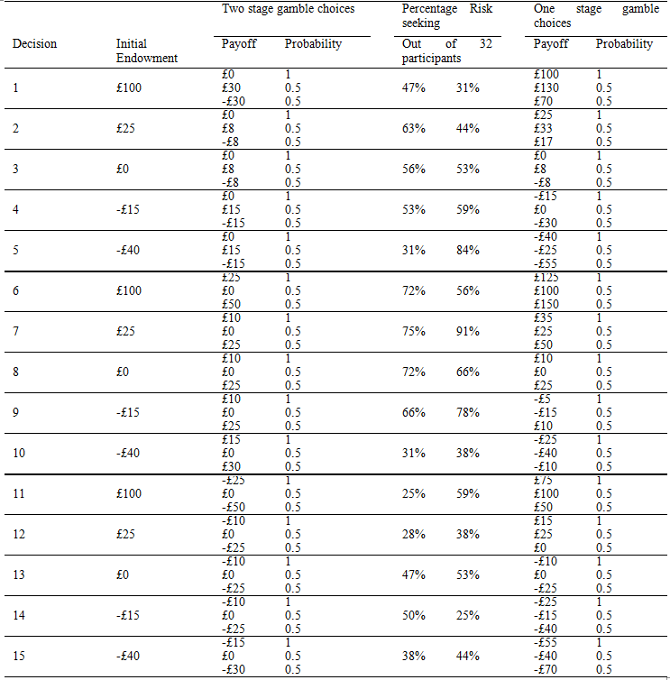

Abstract
The paper tests for how prior outcomes can influence individual’s perception of risk and the existence of the house money effect. The experiment is conducted over two sessions, analysing how individuals choose between a safe and risky lottery when they are framed in either a one-stage or two-stage gamble format. Testing the hypothesis to determine how prior outcomes can affect risk preferences. This paper finds the existence of the house money effect where the initial endowment is sufficiently large enough to counteract the potential losses.
Prediction
After receiving a prior gain: The participants may be more risk seeking when they receive a prior gain due to the house money effect. This effect explains how prior gains induce risk-seeking behaviour. If individuals integrate subsequent losses with prior gains then their perception of losses can be reframed as a reduction in a gain. Therefore mitigating the effect of loss aversion upon the individual . Contrary, individuals may segregate losses from prior results, as they include it in the reference point. As reference points are commonly ignored then the individual’s perception of risk will be determined by there utility associated with the potential gain or loss.
After receiving a prior loss: When experiencing prior losses, even if the losses are segregated from the prior endowment it will still result in a negative outcome, therefore this might suggest that perception for losses with or without a prior negative result may result in the same preferences. There is also a case for participants to become more risk averse as they try to mitigate any further losses. Conversely, participants may become more risk seeking when given a negative endowment in order to try and diminish their final losses, as they try and recover their sunk costs. If there were an opportunity to obtain a result around the reflection point (£0) to avoid losses altogether then according to the break-even effect most individuals would become more risk seeking.
Data
Summary
Through conducting and evaluating individual’s perceptions of risk between similar choices under different framing effects, this paper is able to conclude that there is sufficient evidence for the presence of the house money effect. Individuals tend to integrate losses when they receive prior gains that amounts larger than the loss. This integration of the loss leads to the individual perceiving the proposed gamble more favourably (risk seeking) than if the same question was posed to them with the removal of the initial gain. These results are therefore consistent with that of Thaler’s (1990) experiment which uses a between subject design. The ‘pure loss’ section of the experiment is unique to this paper and displays a reverse house money effect suggesting that without the possibility of a gain amount, individuals tend to become more risk averse regardless of the initial endowed amount.